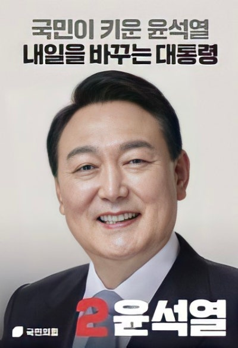

후보자 정보: 윤석열 (제20대 대통령 선거)

| 소속 정당 | 국민의힘 |
|---|---|
| 생년월일 | 1960년 12월 18일 |
| 출신지 | 서울특별시 서대문구 |
| 학력 | 서울대학교 법학과 학사 |
| 주요 경력 |
제59대 서울중앙지방검찰청 검사장 제43대 검찰총장 서울중앙지검장 대검찰청 중앙수사부 검사 제20대 대통령 선거 국민의힘 후보 |
주요 공약 및 정책
✔ 경제: 민간 주도 성장, 규제 완화, 부동산 세제 개편
✔ 정치 개혁: 권력기관 개혁, 대통령실 이전
✔ 복지: 청년 일자리 확대, 병사 월급 인상
✔ 교육: 공정한 교육 기회 확대
✔ 외교·안보: 한미동맹 강화, 대북 억지력 확보
✔ 정치 개혁: 권력기관 개혁, 대통령실 이전
✔ 복지: 청년 일자리 확대, 병사 월급 인상
✔ 교육: 공정한 교육 기회 확대
✔ 외교·안보: 한미동맹 강화, 대북 억지력 확보
비전과 슬로건
슬로건: 국민이 키운 윤석열, 내일을 바꾸는 대통령
핵심 가치: 공정, 자유, 상식
핵심 가치: 공정, 자유, 상식
논란 및 이슈
✔ 정계 경험 부족: 정치권 경험 없이 곧바로 대선에 출마하면서 국정 운영 능력에 대한 우려 제기
✔ 검찰총장 시절 수사 공정성 논란: 조국 전 장관 관련 수사와 여권과의 갈등
✔ 장모·부인 관련 의혹: 가족 관련 각종 의혹 및 재판 이슈
✔ 청와대 이전 논란: 대통령 집무실 이전 문제에 대한 찬반 논쟁
✔ 선거 유세 중 발언 논란: 과격하거나 논란이 된 일부 발언
✔ 검찰총장 시절 수사 공정성 논란: 조국 전 장관 관련 수사와 여권과의 갈등
✔ 장모·부인 관련 의혹: 가족 관련 각종 의혹 및 재판 이슈
✔ 청와대 이전 논란: 대통령 집무실 이전 문제에 대한 찬반 논쟁
✔ 선거 유세 중 발언 논란: 과격하거나 논란이 된 일부 발언